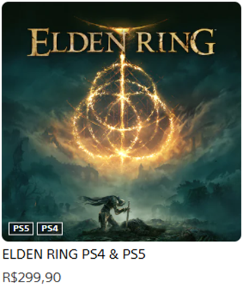

Toque/clique em um capítulo para abrir e escolher uma seção. Use o menu fixo no topo para voltar aqui.
1. ESTRUTURA DO GRUPO Ir
2. OBJETIVOS DO GRUPO Ir
3. REGRAS GERAIS DO GRUPO Ir
4. TIPOS DE GRUPOS ESPECÍFICOS E MODELOS DE VAGAS Ir
5. AJUSTE DE VAGAS, DESMEMBRAMENTO E REAGRUPAMENTO EM GRUPOS ESPECÍFICOS Ir
6. PROCEDIMENTOS PARA OFERTA DE JOGOS E MONTAGEM DE GRUPO ESPECÍFICO Ir
7. PASSO A PASSO PARA CRIAR A CONTA PSN, COMPRAR O JOGO E CONFIGURAR O ACESSO Ir
- 7.1. Criação da conta PSN (exclusiva para o jogo) e compra do jogo
- 7.2. Registro e guarda de dados (recomendação)
- 7.3. Procedimentos em caso de revenda (troca de membro no Grupo Específico)
- 7.4. Ativação do jogo no console (por tipo de vaga)
- 7.4.1. PlayStation 4 (PS4)
- 7.4.2. PlayStation 5 (PS5)
- 7.5. Desativação/remoção de conta do console (procedimento geral)
- 7.5.1. PlayStation 4 (PS4) — vaga PRIMÁRIA ou SECUNDÁRIA
- 7.5.2. PlayStation 5 (PS5) — vaga PRIMÁRIA ou SECUNDÁRIA
- 7.6. Dúvidas e suporte
8. ALERTAS, BOAS PRÁTICAS E PROBLEMAS COMUNS Ir
9. CONTATOS Ir
GRUPO DE COMPARTILHAMENTO/
COMPRA E VENDA DE JOGOS PS4 / PS5
Este documento apresenta as diretrizes para o funcionamento de um Grupo Geral Trade & Share Games (TSG) de compartilhamento de jogos digitais nas plataformas PS4 e PS5. O objetivo principal é facilitar o acesso aos jogos, reduzir custos e promover uma experiência colaborativa e organizada.
O Grupo Geral funcionará como a comunidade principal para reunir jogadores interessados em compartilhar jogos. Cada jogo será gerenciado em Grupos Específicos, compostos por participantes que compartilham o acesso a um jogo específico. Tanto o Grupo Geral quanto os Grupos Específicos se organizarão pelo aplicativo WhatsApp.
1. ESTRUTURA DO GRUPO
1.1. Grupo Geral — TSG
- Reúne todos os membros interessados em participar do sistema de compartilhamento.
- É o espaço principal para comunicação, formação de Grupos Específicos e organização geral.
- Os Administradores são responsáveis por aplicar as regras e mediar conflitos quando necessário.
1.2. Grupos Específicos
- Subgrupos criados para compartilhar um jogo específico, normalmente nos modelos de 3 ou 5 vagas. Também podem existir grupos com menos participantes, quando combinado previamente.
- São formados por participantes que dividem os custos e o acesso ao jogo.
- Cada Grupo Específico terá um Responsável — o membro cujo e-mail está vinculado à conta PSN criada para o jogo — encarregado de organizar o acesso e manter os dados atualizados. O Responsável será o primeiro ponto de contato para dúvidas, problemas técnicos e questões de conduta. O Responsável não deve, em hipótese alguma, sair do Grupo Específico enquanto ele estiver ativo.
- Caso não haja consenso dentro do Grupo Específico, o caso deve ser encaminhado aos Administradores do Grupo Geral, que tomarão a decisão final conforme as diretrizes do TSG.
2. OBJETIVOS DO GRUPO
O TSG busca criar uma comunidade de jogadores para facilitar o acesso colaborativo a jogos digitais, promovendo:
Economia colaborativa: divisão de custos para aquisição de jogos, reduzindo o gasto individual.
Acesso ampliado: possibilidade de experimentar uma variedade maior de jogos por meio do compartilhamento seguro de contas.
Interação e colaboração: incentivo a uma convivência harmoniosa, respeitosa e cooperativa entre os participantes.
Gestão segura e organizada: aplicação de diretrizes claras para assegurar a segurança, a transparência e o bom funcionamento do grupo.
Caráter comunitário e sem fins lucrativos: o TSG não tem objetivo de gerar lucro para administradores, moderadores ou para o próprio grupo.
Observação: o TSG é um grupo comunitário e informativo. Não é uma loja, não intermedia pagamentos e não se responsabiliza por acordos feitos fora das regras e diretrizes deste manual.
Diretriz prática (sem fins lucrativos): é proibida a cobrança de qualquer taxa de participação, mensalidade, taxa administrativa ou qualquer valor similar para “manter” ou “financiar” o TSG.
3. REGRAS GERAIS DO GRUPO
3.1. Regras de Segurança e Confiabilidade
- Indique apenas pessoas de confiança para fazer parte do TSG, pois você será responsabilizado por elas (responsabilidade em cascata).
- É proibido compartilhar, vender ou organizar jogos obtidos fora de meios legais e confiáveis (ex.: contas de origem duvidosa, golpes ou conteúdo pirata).
- Nunca solicite a desativação/encerramento de conta pelo site da PSN ou por qualquer canal externo. Sempre utilize o console para realizar esse procedimento. Na impossibilidade de usar o console, solicite orientação dos Administradores.
- É proibido compartilhar com pessoas de fora do TSG quaisquer dados de contas PSN, prints, conversas ou materiais (incluindo este manual) sobre o funcionamento e a organização do grupo.
- Use senhas fortes e exclusivas nas contas PSN e mantenha os dados protegidos, evitando reutilizar senhas de outros serviços.
3.2. Regras de Conduta no Grupo Geral
- O Grupo Geral é destinado exclusivamente a anúncios de compra e venda. Qualquer outro tipo de conteúdo será removido pelos Administradores. Negociações de valores, pagamentos, acertos e combinações devem ocorrer apenas no privado entre os membros envolvidos.
- Respeite os outros participantes; comportamentos ofensivos, ameaças, assédio ou discriminação não serão tolerados.
- É proibido enviar vídeos aleatórios, correntes, spam, propaganda ou mensagens fora do propósito do TSG.
3.3. Regras dos Grupos Específicos
- Cada jogo compartilhado será organizado em um Grupo Específico no WhatsApp, com participantes previamente definidos.
- Cada Grupo Específico terá um Responsável (Conta Primária) — o membro cujo e-mail está vinculado à conta PSN criada para o jogo — que criará o subgrupo, organizará os acessos e manterá os dados atualizados.
- É proibido obter lucro com a venda de vagas/cotas em Grupos Específicos. O objetivo é apenas a divisão de custos. Não há uma regra fixa para o valor de repasse das cotas, pois trata-se de um grupo de negociação; porém, recomenda-se que a cota seja repassada por, no máximo, 80% do valor pago na aquisição.
- Qualquer alteração nos dados de acesso (e-mail, senha, configurações ou recuperação) deve ser informada imediatamente a todos os membros do Grupo Específico.
3.4. Penalidades
- O descumprimento das regras, incluindo fraudes, má-fé ou comportamentos inadequados, poderá resultar em medidas como: advertência, suspensão, remoção do grupo e/ou ressarcimento financeiro aos membros prejudicados, quando aplicável.
- Pela regra da responsabilidade em cascata, caso o ressarcimento não possa ser aplicado diretamente ao infrator, ele poderá ser direcionado ao membro que o indicou e, se necessário, seguirá pela cadeia de indicações até o ponto possível de responsabilização.
- Estes e outros casos serão avaliados pelos Administradores, buscando a solução mais justa e a manutenção da harmonia e segurança do grupo.
4. TIPOS DE GRUPOS ESPECÍFICOS E MODELOS DE VAGAS
Os Grupos Específicos são formados com base no número de participantes que compartilharão o acesso a um jogo, ocupando as vagas ofertadas no Grupo Geral.
4.1. Tipos de vagas possíveis
Vaga PRIMÁRIA
- Ativada como principal no console PS4 ou PS5.
- Permite que todos os usuários daquele console acessem o conteúdo.
- Possibilita jogar na conta pessoal do próprio usuário e, portanto, obter os troféus nessa conta.
Vaga SECUNDÁRIA
- Não pode ser ativada como principal.
- O conteúdo só pode ser acessado por meio da conta compartilhada.
- Não permite jogar na conta pessoal do usuário; portanto, os troféus do jogo não serão registrados na conta principal do usuário.
4.2. Modelos de Grupos Específicos
Para definir o número de participantes em cada modelo, foi considerado o número máximo de acessos permitido pela PSN, conforme o tipo de jogo (PS4, Cross-Gen ou exclusivo de PS5).
4.2.1. Grupos com até 5 jogadores
Aplicável para: jogos de PS4 ou Cross-Gen (PS4 e PS5). Não aplicável para: jogos exclusivos de PS5.
Número e tipos de vagas
2 vagas PRIMÁRIAS (PS4)
2 vagas PRIMÁRIAS (PS5)
1 vaga SECUNDÁRIA (PS4/PS5)
Divisão de valores (referência do TSG)
Vaga PRIMÁRIA: 22,5% do valor do jogo
Vaga SECUNDÁRIA: 10% do valor do jogo
Exemplo numérico (jogo de R$ 300,00)
Vaga PRIMÁRIA 1 – PS4: 22,5% = R$ 67,50
Vaga PRIMÁRIA 2 – PS4: 22,5% = R$ 67,50
Vaga PRIMÁRIA 1 – PS5: 22,5% = R$ 67,50
Vaga PRIMÁRIA 2 – PS5: 22,5% = R$ 67,50
Vaga SECUNDÁRIA – PS4/PS5: 10% = R$ 30,00
4.2.2. Grupos com até 3 jogadores
Compatível com: todos os jogos, incluindo exclusivos de PS5. Jogos exclusivos de PS5 devem obrigatoriamente utilizar este modelo e, nesse caso, a vaga SECUNDÁRIA, obviamente, deve ser para PS5.
Número e tipos de vagas
2 vagas PRIMÁRIAS
1 vaga SECUNDÁRIA
Divisão de valores (referência do TSG)
Vaga PRIMÁRIA: 40% do valor do jogo
Vaga SECUNDÁRIA: 20% do valor do jogo
Exemplo numérico (jogo de R$ 300,00)
Vaga PRIMÁRIA 1 – PS5: 40% = R$ 120,00
Vaga PRIMÁRIA 2 – PS5: 40% = R$ 120,00
Vaga SECUNDÁRIA – PS5: 20% = R$ 60,00
4.2.3. Ajustes de valor (vaga SECUNDÁRIA) e arredondamento
- A fim de tornar as vagas SECUNDÁRIAS mais atrativas, em comum acordo entre os participantes do Grupo Específico, o valor da cota SECUNDÁRIA pode ser reduzido.
- Qualquer redução aplicada à cota SECUNDÁRIA será absorvida pelas vagas PRIMÁRIAS, dividindo-se a diferença entre elas (salvo acordo diferente, comunicado claramente no grupo antes do fechamento).
- Quando a divisão resultar em valores com centavos “quebrados” (arredondamento), o Responsável deverá ajustar os valores para que a soma final seja exatamente igual ao valor total do jogo.
- Por padrão, eventuais diferenças de arredondamento (para mais ou para menos) devem ser ajustadas nas vagas PRIMÁRIAS, de forma transparente e informada no Grupo Específico.
5. AJUSTE DE VAGAS, DESMEMBRAMENTO E REAGRUPAMENTO EM GRUPOS ESPECÍFICOS
Quando, por comum acordo, os participantes decidirem fechar um Grupo Específico sem preencher todas as vagas possíveis, os valores deverão ser recalculados e redistribuídos. Como regra geral, mantém-se o percentual estipulado para a vaga SECUNDÁRIA (quando houver), e o valor restante é redistribuído entre as vagas PRIMÁRIAS em partes iguais.
5.1. Fechamento do grupo com menos vagas (recalcular valores)
Exemplo numérico 2 (jogo de R$ 300,00)
Grupo que poderia ter 5 vagas, mas foi fechado com 3 vagas PRIMÁRIAS e 1 vaga SECUNDÁRIA (mantendo a SECUNDÁRIA em 10%):
Vaga PRIMÁRIA 1 – PS4: 30% = R$ 90,00
Vaga PRIMÁRIA 2 – PS4: 30% = R$ 90,00
Vaga PRIMÁRIA 1 – PS5: 30% = R$ 90,00
Vaga SECUNDÁRIA – PS4/PS5: 10% = R$ 30,00
Exemplo numérico 3 (jogo de R$ 300,00)
Se a vaga SECUNDÁRIA não for preenchida, o valor é dividido igualmente entre as vagas PRIMÁRIAS:
Vaga PRIMÁRIA 1 – PS4: 33,33% = R$ 100,00
Vaga PRIMÁRIA 2 – PS4: 33,33% = R$ 100,00
Vaga PRIMÁRIA 1 – PS5: 33,33% = R$ 100,00
5.2. Regras simplificadas de redistribuição
- Se a vaga SECUNDÁRIA não for preenchida, as vagas PRIMÁRIAS dividem o custo igualmente.
- Se uma (ou mais) vaga PRIMÁRIA não for preenchida, a vaga SECUNDÁRIA (quando existir) mantém seu percentual estipulado:
10% para jogos PS4/Cross-Gen
20% para jogos exclusivos de PS5
O valor restante é dividido igualmente entre as vagas PRIMÁRIAS que permanecerem.
5.3. Desmembramento e reagrupamento (mudança de tamanho do grupo)
- Nos casos em que o grupo for fechado sem ocupar todas as vagas possíveis, ele pode ser desmembrado (tornar-se um grupo menor), desde que todos os membros concordem. Caso não haja concordância, os valores e regras originais permanecem.
- O mesmo raciocínio se aplica ao reagrupamento: se uma vaga remanescente for ocupada posteriormente, o grupo pode voltar a um modelo maior (por exemplo, aproximando-se novamente do modelo de 5 ou de 3 participantes).
- Em caso de reagrupamento, haverá reajuste dos valores pagos, com reembolsos ou pagamentos complementares, conforme os critérios de divisão de valores definidos neste manual.
- Todo reajuste deve ser informado de forma clara pelo Responsável, com os valores anteriores, os novos valores e o saldo (quem recebe/quem paga).
5.4. Arredondamento e ajuste final de centavos
- Sempre que a redistribuição gerar valores com centavos “quebrados”, o Responsável deverá aplicar arredondamento de forma que a soma total das cotas seja exatamente igual ao valor total do jogo.
- Por padrão, diferenças de arredondamento (para mais ou para menos) devem ser ajustadas nas vagas PRIMÁRIAS, dividindo a diferença entre elas (salvo acordo diferente, informado no grupo).
- O critério de arredondamento utilizado deve ser transparente e comunicado no Grupo Específico, junto com o demonstrativo final dos valores.
6. PROCEDIMENTOS PARA OFERTA DE JOGOS E MONTAGEM DE GRUPO ESPECÍFICO
6.1. Passo a passo para oferta de venda no Grupo Geral
Após definir o jogo que será negociado, o próximo passo é oferecer as vagas no Grupo Geral e iniciar a formação do Grupo Específico. Isso deve ser feito por meio de um anúncio de venda, seguindo os critérios abaixo.
- Informações sobre o jogo
- Nome do jogo: informe o título do jogo.
- DLC (se houver): informe se há DLC disponível e, se necessário, os respectivos valores.
- Valor do jogo: informe o valor original do jogo.
- Promoção (se aplicável): informe o valor promocional e a data de término da promoção.
- Status do grupo: indique o status como ABERTO (enquanto houver vagas disponíveis) ou FECHADO (quando todas as vagas estiverem preenchidas).
- Tipo de grupo e cálculo de valores
- Defina o modelo do grupo (até 5 ou até 3 participantes) e os tipos de vagas ofertadas (PRIMÁRIAS e/ou SECUNDÁRIA).
- Calcule a divisão dos valores conforme os critérios definidos neste manual.
- Apresente claramente a divisão, por exemplo:
- Vagas PRIMÁRIAS: PS4 e/ou PS5, com o valor de cada cota
- Vaga SECUNDÁRIA: PS4/PS5 (ou PS5, quando aplicável), com o valor da cota
Exemplo de anúncio 1:
5 VAGAS (SEM PROMOÇÃO) 3 VAGAS (SEM PROMOÇÃO)  Jogo: Elden Ring Edição Padrão
Valor: R$ 299,90
PRIMÁRIA 1 PS4 - R$ 67,48 (VAGO)
PRIMÁRIA 2 PS4 - R$ 67,48 (VAGO)
PRIMÁRIA 1 PS5 - R$ 67,48 (VAGO)
PRIMÁRIA 2 PS5 - R$ 67,48 (VAGO)
SECUNDÁRIA PS4/PS5 - R$ 29,99 (VAGO)
STATUS: ABERTOJogo: Elden Ring Edição Padrão
Valor: R$ 299,90
PRIMÁRIA 1 PS5 - R$ 119,96 (VAGO)
PRIMÁRIA 2 PS5 - R$ 119,96 (VAGO)
SECUNDÁRIA PS5 - R$ 59,98 (VAGO)
STATUS: ABERTOExemplo de anúncio 2:
5 VAGAS (COM PROMOÇÃO) 3 VAGAS (COM PROMOÇÃO) Jogo: Lies of P – Deluxe Edition
Promoção: R$ 349,99 por R$ 209,94 até 18/01/2025
PRIMÁRIA 1 PS4 - R$ 47,24 (VAGO)
PRIMÁRIA 2 PS4 - R$ 47,24 (VAGO)
PRIMÁRIA 1 PS5 - R$ 47,24 (VAGO)
PRIMÁRIA 2 PS5 - R$ 47,24 (VAGO)
SECUNDÁRIA PS4/PS5 - R$ 20,99 (VAGO)
STATUS: ABERTOJogo: Lies of P – Deluxe Edition
Promoção: R$ 349,99 por R$ 209,94 até 18/01/2025
PRIMÁRIA 1 PS5 - R$ 83,98 (VAGO)
PRIMÁRIA 2 PS5 - R$ 83,98 (VAGO)
SECUNDÁRIA PS5 - R$ 41,99 (VAGO)
STATUS: ABERTO - Pagamentos
- As tratativas de pagamento devem ocorrer no privado com os interessados nas vagas.
- As partes devem definir, em comum acordo, a forma de pagamento (PIX, transferência bancária etc.).
- O TSG não intermedia pagamentos.
Atualização do anúncio e mudança de status
- À medida que as vagas forem sendo preenchidas, atualize o anúncio com o nome dos participantes, para manter a transparência.
- Quando todas as vagas forem preenchidas, altere o status para FECHADO.
- Após fechar, publique no Grupo Geral uma mensagem informando que o grupo foi fechado, evitando novas solicitações e confusões.
- Criação do Grupo Específico no WhatsApp
- No WhatsApp, crie um grupo específico para o jogo negociado, incluindo todos os participantes e torne TODOS os membros administradores.
- Nome do grupo: deve conter o nome do jogo (ou sigla) + TSG, para facilitar a identificação rápida e a localização do grupo no WhatsApp, especialmente quando o Responsável administra vários Grupos Específicos ao mesmo tempo.Exemplo: Elden Ring – Jogo Base – TSG
- Descrição do grupo: deve incluir os valores de cada vaga e os nomes dos participantes, para manter transparência. Sempre que houver revenda, a descrição deve ser atualizada.
- Responsabilidade do criador (Responsável): o criador do grupo é o Responsável (Conta Primária), cujo e-mail está vinculado à conta PSN do jogo. Ele deve manter seu contato visível na descrição e não deve sair do grupo enquanto ele estiver ativo (podendo também permanecer como administrador).
- Controle pessoal de acessos (recomendação): recomenda-se que o Responsável mantenha anotado, em um arquivo pessoal e privado (por exemplo, em um bloco de notas), o login e a senha de cada conta TSG sob sua responsabilidade. Isso ajuda a evitar perda de acesso e problemas futuros em casos de troca de senha, recuperação de conta ou suporte aos membros.
- Exemplo de descrição do Grupo Específico (WhatsApp)
Nome do grupo: Elden Ring – Jogo Base – TSG
Descrição do grupo:
Valor do jogo: R$ 300,00
PRIMÁRIAS PS4/PS5: R$ 67,50
SECUNDÁRIA PS4/PS5: R$ 30,00
PRIMÁRIA 1 PS5 = Tamires
PRIMÁRIA 2 PS5 = Caio
SECUNDÁRIA PS4/PS5 = Junior
Login:
Senha: abc1234
Importante:
Sempre que houver revenda, siga o procedimento de adicionar o novo membro, torná-lo administrador e remover o anterior. Após a saída de qualquer membro, é aconselhável que altere a senha do jogo para manter a segurança.
7. PASSO A PASSO PARA CRIAR A CONTA PSN, COMPRAR O JOGO E CONFIGURAR O ACESSO
Observação: nomes e caminhos de menus podem variar ligeiramente conforme o idioma do console e atualizações do sistema, mas as funções e o procedimento são equivalentes.
7.1. Criação da conta PSN (exclusiva para o jogo) e compra do jogo
Após definidas todas as vagas do jogo anunciado, é hora de criar uma conta PSN exclusiva para esse jogo. Para padronização e organização:
- Utilize seu console e seu e-mail pessoal do Gmail para criar a conta PSN do jogo.
- No console, crie um novo usuário (não é necessário criar um e-mail previamente).
- Para o e-mail de login da conta PSN, use o padrão do Gmail com “+”:
Formato: seu.usuario+nomedojogo-tsg@gmail.com
Exemplo: usuario.principal+liesofp-tsg@gmail.com
- Vantagens: você recebe notificações no seu e-mail principal, reduz risco de inatividade, facilita recuperação de conta e evita criar/gerenciar vários e-mails.
- Após criar a conta PSN, faça login nela, compre o jogo e inicie o download.
7.2. Registro e guarda de dados (recomendação)
- Recomenda-se que o responsável pela conta mantenha anotado, em um arquivo pessoal e privado (ex.: bloco de notas), o login e a senha de cada conta TSG sob sua responsabilidade.
- Isso evita perda de acesso e ajuda em casos de troca de senha, recuperação da conta e suporte aos membros do Grupo Específico.
7.3. Procedimentos em caso de revenda (troca de membro no Grupo Específico)
- Entrada de novo membro: antes de adicionar um novo membro ao Grupo Específico, confirme o pagamento (tratativa no privado).
- Saída do membro anterior: remova o membro que está saindo do grupo; ele não deverá mais ter acesso ao jogo.
- Troca de senha: após a saída de qualquer membro, altere a senha da conta PSN do jogo para garantir que apenas os membros ativos tenham acesso.
- Atualização da descrição do grupo: atualize a descrição do Grupo Específico com o nome do novo membro e os valores, mantendo transparência.
7.4. Ativação do jogo no console (por tipo de vaga)
Crie um novo usuário no console com o login e a senha fornecidos pelo Grupo Específico.
Acesse esse usuário e vá até Configurações.
Siga o procedimento conforme o tipo de vaga (PRIMÁRIA ou SECUNDÁRIA).
7.4.1. PlayStation 4 (PS4)
🔹 Vaga PRIMÁRIA
Configurações → Gerenciamento da conta → Ativar como principal
Depois, saia desse usuário e volte para seu usuário principal. O jogo ficará disponível normalmente.
🔹 Vaga SECUNDÁRIA
Configurações → Gerenciamento da conta → Ativar como principal → Desativar
Importante: confirme que “Ativar como principal” está desativado (em alguns casos pode ativar automaticamente).
Em vaga secundária, o jogo deve ser jogado somente pela conta do jogo. Não deve JAMAIS ser jogado pela conta pessoal de qualquer usuário do console.
7.4.2. PlayStation 5 (PS5)
🔹 Vaga PRIMÁRIA
Usuários e Contas → Outros → Compartilhamento de Console e Jogo Offline → Habilitar
Depois, saia desse usuário e volte para seu usuário principal. O jogo ficará disponível normalmente.
🔹 Vaga SECUNDÁRIA
Usuários e Contas → Outros → Compartilhamento de Console e Jogo Offline → Desabilitar
Importante: em vaga secundária, é obrigatório que essa opção esteja desabilitada.
Em vaga secundária, o jogo deve ser jogado somente pela conta do jogo. Não deve JAMAIS ser jogado pela conta pessoal de qualquer usuário do console.
7.5. Desativação/remoção de conta do console (procedimento geral)
⚠️⚠️⚠️ IMPORTANTE: nunca desative/desabilite contas pelo site da PSN. Use somente o console para esse procedimento.
Situações comuns onde será necessário o procedimento de desativação/desabilitação da conta do seu console: revenda de vaga, troca de console, reorganização de usuários, entre outras.
7.5.1. PlayStation 4 (PS4) — vaga PRIMÁRIA ou SECUNDÁRIA
- Pelo console (sempre), faça login na conta do jogo.
- Configurações → Gerenciamento da conta → Ativar como principal → Desativar
- Exclua o jogo do console:
Configurações → Armazenamento → Armazenamento do sistema → Aplicativos → Excluir jogo
- Exclua o usuário do console:
Configurações de login → Gerenciamento de usuários → Excluir usuário
7.5.2. PlayStation 5 (PS5) — vaga PRIMÁRIA ou SECUNDÁRIA
- Pelo console (sempre), faça login na conta do jogo.
- Usuários e Contas → Outros → Compartilhamento de Console e Jogo Offline → Desabilitar
- Exclua o jogo do console:
Configurações → Armazenamento → Jogos e aplicativos → Excluir jogo
- Exclua o usuário do console:
Configurações → Usuários e Contas → Outros → Excluir usuário
7.6. Dúvidas e suporte
- Em caso de dúvida, consulte os Administradores antes de agir.
- Em procedimentos sensíveis (criação de conta, recuperação, desativação, revenda e troca de senha), peça orientação aos Administradores para evitar erros, bloqueios e prejuízos ao grupo.
8. ALERTAS, BOAS PRÁTICAS E PROBLEMAS COMUNS
8.1. Regras de Ouro
- Antes de repassar sua vaga/conta para outra pessoa: desative/desabilite a conta no seu console e exclua o usuário do console (conforme o Tópico 7.5).
- Vai anunciar um jogo para ficar com a VAGA SECUNDÁRIA? Não crie a conta do jogo na PSN; aguarde pelo menos 1 vaga PRIMÁRIA ser definida primeiro. A conta PSN do jogo deve ser criada pelo Responsável (Conta Primária), cujo e-mail ficará vinculado à conta do jogo.
- Adquiriu uma vaga SECUNDÁRIA e adicionou no console? Verifique se o sistema não ativou/habilitou automaticamente.
- Se a configuração estiver incorreta, corrija imediatamente (SECUNDÁRIA deve permanecer desativada; PRIMÁRIA deve estar habilitada conforme o Tópico 7.4).
- Nunca confirme opções “no automático”. Leia e confira antes de clicar em SIM/OK/Confirmar (vale para PRIMÁRIA e SECUNDÁRIA).
8.2. CADEADO no jogo (o que significa e como resolver)
- O ícone de cadeado geralmente indica que a licença do jogo não está válida naquele console naquele momento.
- As causas mais comuns são:
A conta não está configurada como principal (PS4) ou o “Compartilhamento de Console e Jogo Offline” está desabilitado (PS5);
Houve alteração recente na conta (troca de senha, desativação feita por engano, troca de usuário).
- Mas por que isso acontece?
A gente usa 2 vagas PRIMÁRIAS por plataforma.
É impossível manter as duas ativadas ao mesmo tempo: se uma ativa, a outra vai cair.
A PSN/Sony às vezes demora para “perceber”, mas o cadeado vai aparecer em algum momento (na hora ou dias depois). Na verdade, contamos com isso para o compartilhamento ser viável economicamente.
- Procedimento recomendado:
Refaça a configuração correta do tipo da sua vaga (ver Tópico 7.4);
Se não resolver, comunique no Grupo Específico e acione o Responsável;
Persistindo, leve o caso aos Administradores.
8.3. Aviso de segurança — identificação do console (obrigatório)
- Para aumentar a segurança e o controle de acessos, é obrigatório definir um nome para o console. Isso permite identificar quais consoles acessaram uma conta TSG, ajudando a prevenir acessos indevidos.
- O nome pode ser o nome pelo qual você é conhecido no grupo (apelido/nickname). Não é necessário usar nome completo.
- Como definir o nome do console (PS5):
Configurações → Sistema → Software do Sistema → Informações do Console → Nome
- Acesso indevido a uma conta sem direito resultará em penalidades, incluindo banimento, conforme as regras do grupo.
8.4. Regra final — na dúvida, pare e pergunte
- Se você não tiver certeza do que está fazendo, não execute o procedimento.
- Na dúvida, peça orientação primeiro ao Responsável do Grupo Específico e, se necessário, aos Administradores.
- A maioria dos problemas do TSG acontece por pressa ou por confirmar opções sem checar. Segurança e organização vêm em primeiro lugar.
9. CONTATOS
Email: trade.share.games@gmail.com